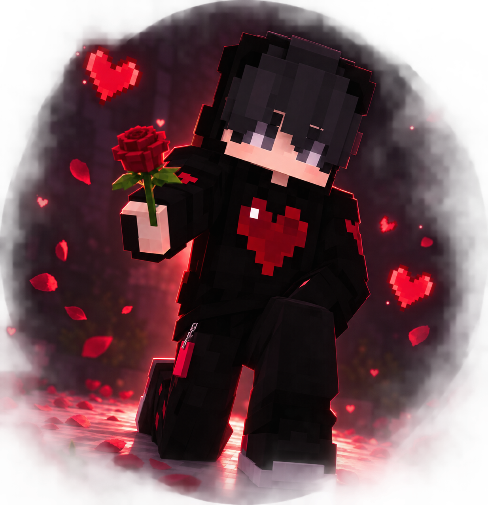

Para este dia...
Esta es un detalle para ti mi niña ❤️
Hola mi pequeña ya tenia tiempo que no te escribia pero esta es una ocasion especial ya que despues de un tiempo vuelvo a poder verte en persona cosa que siempre quiero realmente, espero este sea realmente un detalle que te guste mucho mi niña ya que es algo que tanto estuve guardadondo como planificando, ya que tampoco sabria cuando seria nuevamente el dia en el que te pudiera ver sinceramente y pues tampoco pense que fuera en un corto tiempo, bueno al menos para mi jsjs, pero sin mas espero en verdad te guste ya que es con mucho cariño 💖.
Primero que todo quiero felicitarte por el gran trabajo que has hecho en la prepa realmente y por tu calificaciones en especial ya que aun que digas que no te estas esforzando en ellas se ve realmente el empeño y esfuerzo que le pones alas cosas, tambien me siento feliz porque estas aprendiendo bien matematicas aun que sea tediosa yo confio en que realmente tu las entederas, quizas a tu manera pero siempre tendras a este profesor que te enseñe lo que sabe aun que sea por el tiempo que tu me permitras o al menos que sea para siempre verdad ahi ni como negarme porque como rechazarla a usted realmente es lo que mas quiero sinceramente, y tambien como olvidar realmente el hecho de agradecerle por todo en verdad ya que aun que crea usted que no hace nada, creame que no es asi ya que usted es la inspiracion para mi ya que sin usted mi esfuerzo por hacer las cosas no se viera ya que es por usted quien siempre me esfuerzo en hacer mis cosas o si no en ayudarle realmente ya que me gusta estar para usted y que tambien sepa bien claro que no estoy jugando, pero supongo eso lo sabe usted desde el comienzo de todo, gracias por ser la inspiracion y motivacion de mi gusto por la programacion y tambien en mis videojuegos sinceramente la quiero y amo como no tiene una idea usted, simplemente espero y un dia simplemente estas cartas sean recuerdo de un pasado y estemos en un futuro donde simplemente seamos usted y yo aun que se para ello tenemos que trabajar por eso simplemente usted siempre sabra mi propuesta de que solo quiero algo con usted sin mas algo que vaya con juegos de sentimientos, ni acciones que hagan dudar, simplemente seamos ustedm yo y la confianza que forjemos con el tiempo sin mas, sera dificil, si realmetne se que sera dificil pero lo dejo a su criterio mi queria mujer, solo usted tiene la decision de darme una respuesta clara sin mas, no la preciono realmente solo quiero que sepa bien que aqui estoy y voy a estar todo lo que usted me permita.
Weno ahora pasando de lo serio a lo normal jsjs, sin mas en verdad que me gusta estar contigo pequeña y convivir sinceramente, tambien se que me atrace con la entrega de estos regalos pero aqui estan jsjs, son detalles que elegi pensando en usted simplemente, no le miento que no sabia como hacerle para entregarlos ya que como nos alejamos un tiempo si me dio miedito el quedarme con ello, no por mal si no porque realmente si se los queria dar, pero gracias por mas que nada el buscarme y llegar con una buena noticia de aquella ves del examen en vdd jsjs. TE AMOOOOOOO 💖, no me canso de decirselo realemte, se que quizas usted ahorita no me puede ser sincera con todo pero yo no me quejo ni reniego ya que se bien lo que usted me comento de aquella ves que hablamos simplemente quiero dejarle en claro que simplemente sere yo sin ma, le mostrare quien soy y le sere honesto con lo que me pregunete y quiera saber realmente, espero y proto o cuando usted o Dios nos permita ser pareja simplemente quiero hacerla feliz. Pero encerio Elizabeth muchas gracias te lo digo encerio por todo, se que ahi cosas que cuestan decir y contar pero espero y con el tiempo podamos tener la confianza que alguna ves tuvimos y mejor, aun que desde la ves que le conte que no confiaba al cien en usted, pues todo cambio en verdad, se que no tengo porque dudar de ti en verdad mas porque se que ya estas grandem, pero sobre eso se que no tengo realmente motivos para dudar de ti y quiero que lo sepas que no estoy dudando de ti, ni desconfiando ya que no quiero que cosas del pasado me hagan pensar que nada a cambiado ya que si he notado cambios que me han hecho ver las cosas distintas y por lo mismo yo tambien me estoy esforzando, simplemente seria eso mi pequeña 💖.

Te quiero mucho mi pequeña ♥️